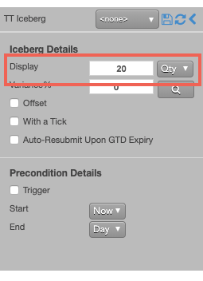
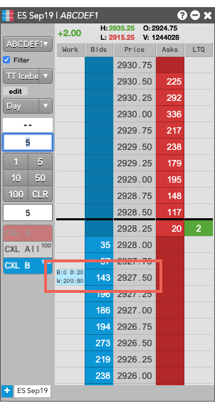
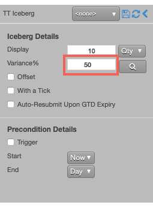
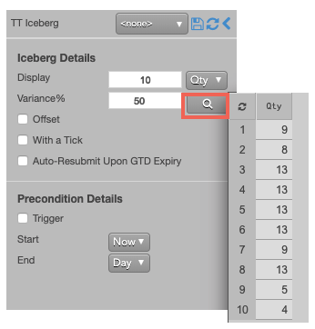
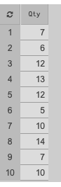
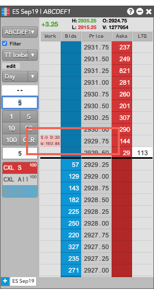

A TT Iceberg order executes a large volume order by breaking it into smaller disclosed orders, publicly displaying only the specified portion instead of the full order quantity. When one disclosed portion fills, the next portion is entered into the market. This process continues until the order is filled.
Behaviors
The following examples illustrate how you can configure a TT Iceberg order with different behaviors for the child and parent orders. Also, each example shows how the order will appear in MD Trader.
-
Determining the disclosed quantities of the child orders
-
Specifying the price at which child orders are entered and worked
-
Setting preconditions for the parent order
Submitting child orders with a fixed quantity
A basic Iceberg order slices a large-quantity order into smaller-sized orders of a fixed quantity, all at the same price. A TT Iceberg lets you specify either a fixed quantity for every child order or specify the static quantity as a percentage of the total parent order quantity.
To set the same fixed quantity for each child order:
-
Select TT Iceberg from the order type dropdown to display the flyout.

-
Set Display to the desired quantity and select Qty from the Display dropdown.
If you wanted to submit a percentage of the total order quantity instead, you could enter the desired percentage and select % from the Display dropdown.
-
Submit the order at the desired side and price.
If you submitted a 100-lot Buy order at 2927.50 with a disclosed quantity of 20, the TT Iceberg parent order would resemble the following:

-
The disclosed (D:20) and working (W:20) quantities are both 20.
-
The remaining undisclosed quantity (U:80) is 80.
After each child order is fully filled, the TT Iceberg will submit the next 20-lot order at 2927.50 until the total order quantity has been filled.
Varying the quantities of the child order
Instead of submitting a fixed quantity for every child order you can use a variance to increase or reduce the quantity of each child order by a random amount. This amount uses a percentage of the disclosed quantity as its threshold.
To vary the disclosed quantity by a percentage of the order size:
-
Set the desired Display quantity. This quantity becomes the base quantity for calculating variance.
-
Set the Variance and select % from the dropdown. This example sets the variance to 50%, so each child order could have an order quantity within 50% (+/- 4 ) of the base disclosed quantity.

-
To see a proposed distribution of the child orders, click
 . Note: You must specify the order quantity to see the distribution.
A flyout shows the quantity of each child order that will be entered when you submit the parent order.
. Note: You must specify the order quantity to see the distribution.
A flyout shows the quantity of each child order that will be entered when you submit the parent order.

If you want to change the proposed distribution, you can continue to click until you see a distribution you like.

Note: If you do not display the variance, or if you make any order change after displaying the variance distribution, the TT Iceberg parent order will submit its child orders with random quantities within the specified variance until the total order quantity has been filled.
-
Submit the order at the desired side and price.
{% comment %}
If you submitted a Sell order for 100 contracts at 2929.75 and select a disclosed quantity of 10, the TT Iceberg parent order would resemble the following:

-
The disclosed quantity (D:20) verifies that the base order quantity for each slice is 20.
-
The working quantity (W:16) shows the child order quantity is 16, which indicates a -20% variance.
-
The remaining undisclosed quantity (U:84) shows the remaining parent order quantity is 84.
{% endcomment %}
If you submitted a 100-lot order at 2970.50 with the above display and variance settings, the TT Iceberg parent order would submit a 7-lot child order.
After each child order is fully filled, the TT Iceberg will submit each subsequent order at 2970.50 with the varied quantity shown in the distribution.
Varying the prices of child orders
The default behavior for a TT Iceberg is to submit each child order at the same price. TT Iceberg orders also let you dynamically set the price of each child order based on different market prices or on the price of the previous order. You can configure the TT Iceberg to determine the price for its child orders by offsetting the price a number of ticks away from the:
-
LTP, Ask or Bid price of the market at the time the child order is submitted.
-
Price of the last child order (PrevSlice).
To enter a child order using a price offset:
-
Enable the Offset parameter.
-
Enter the desired number of ticks away from the selected price type. Use positive numbers to move the price away from the market or negative numbers to move the price toward the market.
-
Select a price type the Offset dropdown. In this case, PrevSlice causes the TT Iceberg parent order to calculate the price of the new child order based on the price of the previous child order.
 If you placed a Buy order at 131'035, the TT Iceberg parent order would resemble the following.
If you placed a Buy order at 131'035, the TT Iceberg parent order would resemble the following.

When each child order is fully filled, the TT Iceberg will submit its next child order at a price level one tick away from the price of the previous child order.
{% include tto-wat-params.html %}
{% include tto-static-trigger-params.html %}
{% include tto-trailing-trigger-shared-description.html %}
To set a trailing trigger for the TT Iceberg parent order:
-
Enable Trigger to set a trigger for the order.
-
From the dropdown, select the type of trailing trigger.
-
Enable the Trail (ticks) parameter to have the trigger trail the market.
-
Enter the desired number ticks away to trail the trigger price.
-
From the Trigger price drop-down, select which price to trail.

If you clicked any price level on the Buy side, the TT Iceberg parent order would resemble the following.

Based on the specified parameters, the TT Iceberg parent order is entered into the market as follows:
-
Because you set a Stop trigger three ticks away from the LTP, the TT Iceberg parent order is placed at 124'135.
-
The working quantity of the order you entered is 0 and will remain so until the order is triggered.
-
When the LTP reaches the trigger price, the TT Iceberg parent order will begin working its child orders at that price level.
{% include tto-time-params.html %}
TT Iceberg order parameters
Iceberg details parameters
The following parameters determine how theTT Iceberg parent order manages its child orders.
- {% include Parameters/DisplayedQuantity_Details.html%}
- {% include Parameters/Variance_Details.html%}
- {% include Parameters/OffsetTicks_Details_Iceberg.html %}
- {% include Parameters/WithATick.html %}
- {% include Parameters/AutoResubmit_Details.html %}
Precondition settings parameters
The following trigger parameters specify the market conditions under which the TT Iceberg parent order will begin entering its child orders.
- {% include Parameters/TriggerType_Details.html%}
- {% include Parameters/TriggerPrice_Details.html%}
- {% include Parameters/TrailOffset.html%}
- {% include Parameters/StartTime_Details.html %}
- {% include Parameters/EndTime_Details.html %}
- {% include Parameters/EndTimeAction_Details.html %}